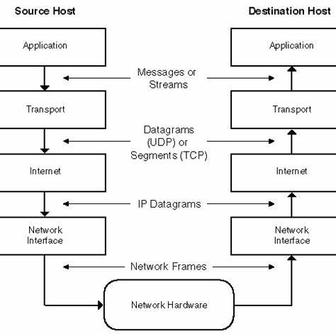
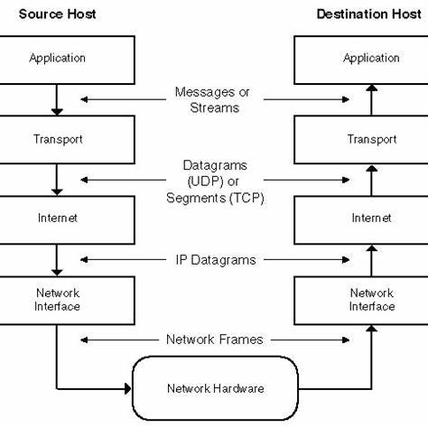
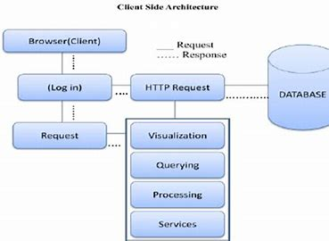
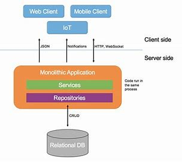
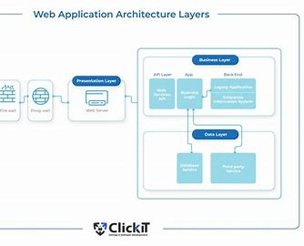

Overview of the World Wide Web

In this section, we delve into the fundamental concepts of the World Wide Web (WWW), discussing how it is a system of interconnected documents and resources accessible through the internet. We'll explain the role of hyperlinks and URLs, and how web browsers facilitate navigation
The World Wide Web (WWW) is a system of interconnected documents and resources accessible through the internet. It revolutionized information sharing and communication by introducing hyperlinks and URLs. Users navigate through web browsers, accessing content hosted on servers worldwide
What is the World Wide Web (WWW)?
The World Wide Web, commonly known as the Web, is a global information system that operates on the internet. It enables users to access and interact with a vast collection of multimedia documents and resources through web browsers.
Key Concepts
The World Wide Web is characterized by the following key concepts:
- ➤ Hypertext: Information is interconnected through hyperlinks, allowing users to navigate between related documents with a simple click.
- ➤ Web Pages: Web pages are documents created using HTML (Hypertext Markup Language) and may include text, images, videos, and other multimedia elements.
- ➤ Web Browsers: Web browsers like Chrome, Firefox, and Safari enable users to access and view web pages, rendering HTML and displaying multimedia content.
- ➤ Uniform Resource Locator (URL): URLs provide the addresses for accessing web resources. They include the protocol (http/https), domain name, and path to the resource.
Evolution and Internet and the World Wide Web has transformed how people communicate, access information, and conduct business:
Originally conceived by Tim Berners-Lee in 1989, the Web has evolved from a simple information-sharing platform to a dynamic ecosystem of websites, web applications, and online services.
It has democratized information, enabling global access to knowledge, entertainment, and services. E-commerce, social media, and online collaboration are some of the outcomes of the Web's evolution.

History of the Internet
WWW vs the Internet
Confusion between the terms "WWW" and "internet" is common. T he internet is the global network infrastructure connecting devices, while the WWW is a subset of the internet consisting of web pages. WWW relies on the internet to function, making the two terms interdependent.
Comparing the World Wide Web and the Internet
The terms "World Wide Web" and "internet" are often used interchangeably, but they refer to distinct concepts:
World Wide Web (WWW)
The World Wide Web is a subset of the internet:
- Consists of interconnected hypertext documents and resources.
- Accessed through web browsers using URLs.
- Relies on protocols like HTTP for data transfer.
- Allows users to navigate through hyperlinks.
Internet
The internet is a global network of interconnected devices:
- Encompasses all networked devices, including computers, servers, and more.
- Provides various services like email, file sharing, and online gaming.
- Supports different communication protocols, including TCP/IP.
- Facilitates data transfer and communication between devices.
.jpg)

Evolution of the Internet
Web 2.0 (2000s - Late 2000s):
User-Generated Content: Web 2.0 marked a transition from static web pages to dynamic platforms driven by user-generated content. Blogs, social media, and wikis empowered users to create and share content.
Interactivity: Rich interactivity became a hallmark of Web 2.0. Websites started offering features like comments, ratings, and feedback, fostering user engagement.
Social Networking: The rise of social networking platforms like Facebook, Twitter, and LinkedIn transformed how people connected and communicated online. Sharing personal experiences and networking became central.
Rich Internet Applications (RIAs): Technologies like AJAX enabled the development of RIAs, which offered desktop-like experiences within web browsers.
Web 3.0 (Late 2000s - 2010s):
Semantic Web: Web 3.0 aimed to make web content more understandable by machines through semantic tagging. This allowed search engines to provide more context-aware and relevant results.
Big Data and AI: The web started harnessing big data and artificial intelligence to analyze and process vast amounts of information. Personalization and recommendation systems improved user experiences.
IoT and Connectivity: The Internet of Things (IoT) began to take shape, with connected devices and sensors interacting with each other and the internet, enabling smart homes and cities.
Web 4.0 (Emerging - Present):
Decentralization (Web 3.5): Web 4.0 is often considered an extension of Web 3.0 with a focus on decentralization. Technologies like blockchain enable trustless transactions and data storage without intermediaries.
Virtual and Augmented Reality (VR/AR): VR and AR technologies are becoming more integrated into the web, offering immersive experiences and new ways to interact with digital content.
Web 3.0 Integration: Web 4.0 may integrate the best aspects of Web 3.0, including semantic web principles and AI-driven personalization, into a more decentralized framework.
Web 4.0 Focus on Experiences: It's expected to emphasize personalized and immersive experiences, with a stronger emphasis on privacy and security.
Internet Protocols
Internet protocols facilitate data exchange. TCP/IP is the foundation, ensuring reliable communication. HTTP governs web communication, with HTTPS ensuring security. FTP enables file transfers, while SMTP handles email. These protocols enable seamless global connectivity
Internet protocols are the foundation of communication on the internet:
- TCP/IP (Transmission Control Protocol/Internet Protocol): The fundamental protocol suite that enables reliable data transmission and routing across networks.
- HTTP (Hypertext Transfer Protocol): Used for transferring web pages and resources on the World Wide Web.
- HTTPS (Hypertext Transfer Protocol Secure): A secure version of HTTP that encrypts data transmission, ensuring privacy and security.
- FTP (File Transfer Protocol): Used for transferring files between a client and a server.
- SMTP (Simple Mail Transfer Protocol): Responsible for sending and receiving email messages.
- POP3 (Post Office Protocol 3) and IMAP (Internet Message Access Protocol): Protocols for retrieving email messages from servers.
- DNS (Domain Name System): Translates human-readable domain names into IP addresses, facilitating web addressing.
- IP (Internet Protocol): Responsible for addressing and routing data packets across networks.
These protocols work together to enable seamless communication and data exchange across the internet.
 

Web Application Architecture
Web applications follow a client-server architecture. The client side includes the user interface (HTML, CSS, JavaScript), running on the user's device. The server side processes data, often using languages like PHP, Python, or Node.js. This separation allows efficient development and maintenance.
Web applications consist of both client-side and server-side components that work together to provide functionality and user experience.
Client-Side Architecture
The client-side handles the presentation and user interactions:
Front-End: This includes components like HTML for structure, CSS for styling, and JavaScript for interactivity. These components are executed within web browsers, which render the user interface and execute JavaScript code.
Web Browsers: These applications interpret and render front-end components, displaying the user interface to users and processing user interactions.
Single Page Applications (SPA): SPAs load the entire application in the browser initially, and then dynamically update the content as users interact. This approach reduces the need to reload the entire page for each interaction.
Server-Side Architecture
The server-side handles the application logic, data management, and communication with clients:
Back-End: The back-end includes components responsible for server-side logic, database interactions, and APIs. This is where business logic is executed and data is processed.
Application Server: The application server executes server-side code and communicates with databases, ensuring data processing and retrieval.
Database: Databases store and manage application data, allowing the application to persistently store and retrieve information.
APIs: APIs (Application Programming Interfaces) enable communication between the front-end and back-end, allowing them to exchange data and requests.
 Server-side Engineering
Server-side engineering focuses on the back-end of web applications, handling data processing, storage, and communication with clients:
Back-End Development
Back-end development involves:
- ☁️ Server-Side Languages: Using languages like Python, Java, Ruby, or PHP to create server-side logic and manage data.
- ☁️ Application Servers: Application servers execute server-side code and handle requests from clients, interacting with databases and APIs.
Database Management
Database management is crucial for storing and retrieving application data:
- ☁️ Database Types: Different databases like SQL (e.g., MySQL, PostgreSQL) and NoSQL (e.g., MongoDB) serve different data storage needs.
- ☁️ CRUD Operations: Performing Create, Read, Update, and Delete operations on database records to manage data.
APIs and Communication
APIs enable communication between the front-end and back-end:
- ☁️ RESTful APIs: Representational State Transfer APIs define how client-server communication occurs through HTTP requests and responses.
- ☁️ JSON and XML: Data formats like JSON (JavaScript Object Notation) and XML (eXtensible Markup Language) are commonly used for data exchange.